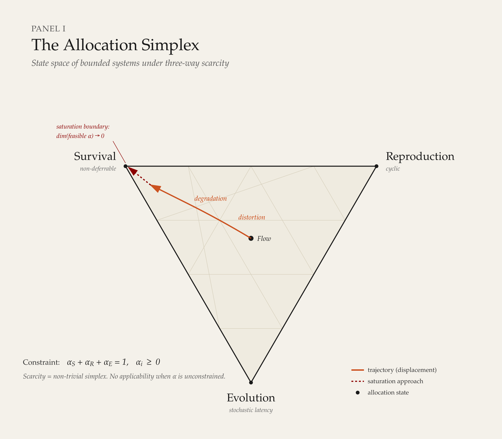

The Model¶
Overview¶
Tri-Contour Dynamics of Limited Resource Allocation describes how systems allocate limited resources across three competing functional demands: Survival, Reproduction, and Evolution. System behavior — its posture, trajectory, and eventual fate — is treated as an outcome of this allocation under environmental pressure, shaped by cross-cutting mediators and constrained by scarcity.
The model's primary application domain is human systems where practices, frameworks, or diagnostics are built: personal effectiveness, project delivery, team dynamics, organizational design. It provides a structural foundation that can operate independently or integrate with other models and frameworks.
The model is theoretically general — its structural logic holds across biological, technical, socio-economic, and cosmological systems where scarcity, competing demands, and non-static behavior are present. However, its development originates from the practice of understanding and improving human dynamics in software delivery, and its applied focus remains there.

The Three Functional Contours¶
The three contours represent primary functional intents — not claims that every system activity has only one effect. A single action may produce consequences across multiple contours. The contours remain analytically distinct at the level of primary function.
Survival¶
Survival is the contour responsible for preserving the current viability and continuity of the system. Its functional role is to maintain existence, protect integrity, absorb disruption, and keep the system operational within tolerable bounds.
Reproduction¶
Reproduction is the contour responsible for copying, scaling, extending, or propagating the system's existing form, patterns, or outputs. Its functional role is to increase presence, reach, quantity, or continuity through multiplication of what already works.
Evolution¶
Evolution is the contour responsible for changing the system's form, behavior, structure, or capabilities. Its functional role is to adapt, learn, restructure, or transform — producing something the system was not previously capable of.
Resource and Scarcity¶
A resource is any limited input that can be allocated among competing system functions. Resources may be physical, temporal, energetic, informational, economic, social, institutional, or symbolic. The model does not require resources to be of a single type — only that scarcity and trade-offs exist at the relevant level of analysis.
Scarcity is the driver of the model. When resources are unlimited, allocation produces no trade-offs, contours do not compete, and the model has no explanatory value. The model becomes relevant precisely where allocation to one contour reduces what is available to others.
Allocation is the central observable. The model does not ask what a system intends or values — it asks where resources go. Among the resource types listed above, time has a specific role: it is the medium through which all allocation is enacted. Every act of allocation requires duration, and the pattern of allocation sustained over time produces cumulative effects — debt, potential, overhead — that shape the system's trajectory. The temporal dynamics of allocation are treated in System Metabolism.
Environment¶
The environment is the set of external conditions that shape resource availability, constraints, pressures, and system viability. The environment may be stable or volatile, permissive or hostile, abundant or scarce. It influences both what the system can do and what it must do to continue.
The environment is not static. Changes in environment alter the viability of existing allocation patterns and may force reallocation, whether the system chooses it or not.
Mediators¶
A mediator is any cross-cutting factor that shapes allocation, signaling, constraint, coordination, or feedback across the three contours — without itself being a fourth contour.
Mediators include factors such as governance, trust, legitimacy, power, information structure, and institutional rules. They are not peripheral — in complex human systems, mediators are often decisive. The model treats them as cross-cutting because they modify how the three contours operate rather than replacing the contours themselves.
The distinction matters: adding mediators as a fourth contour would break the model's allocation logic. Mediators do not compete for the same resource pool as the contours — they shape how that pool is divided.
Applicability¶
The model applies when three conditions hold:
- the system has limited resources,
- those resources face competing demands,
- and the system exhibits non-static behavior over time.
When all three conditions are present, the model can describe the system's allocation posture, diagnose distortion, and inform intervention. When any condition is absent — resources are effectively unlimited, demands do not compete, or the system is static — the model does not apply.
What the Model Does Not Do¶
The model is descriptive first, diagnostic second, and prescriptive only when context, boundaries, and mediating conditions are made explicit.
It does not assume moral value, political orientation, or a preferred outcome. No contour balance is inherently superior to another. A system that allocates heavily to Survival is not worse than one that allocates heavily to Evolution — it is different, and the consequences of that allocation are what the model describes.
The model is not a governance framework, a self-organization theory, or a complexity theory. It does not prescribe management structure, explain emergence, or model network behavior. It describes allocation dynamics and their consequences for system viability.
Theoretical Context¶
The model was developed independently, originating from applied work in software delivery and organizational dynamics. It was not derived from or built upon any existing theory.
Subsequent analysis identified structural correspondences with established theoretical traditions — most notably Life History Theory in biology, which models trade-offs between survival, reproduction, and growth under resource constraints, and General Systems Theory, which provides the foundational vocabulary of systems, boundaries, and environments. These correspondences serve as external validation of the model's structural logic, not as derivation.
The model is differentiated from viable system theories (Beer's VSM, Schwarz's VST) by its central question: where viable system theories ask how governance or self-organization should be structured, Tri-Contour asks where resources go and what happens as a result. Resource allocation is explicit and central, not implicit. Normativity is absent by design, not embedded.